实景照片与摄影署名
照片及机械处理结果沿用各自标注的许可。保留原构图，仅按下列说明缩小和压缩。历史影像不代表当前开放、展览或季节；摄影者不因此为小程序背书。
第四次世界妇女大会纪念公园
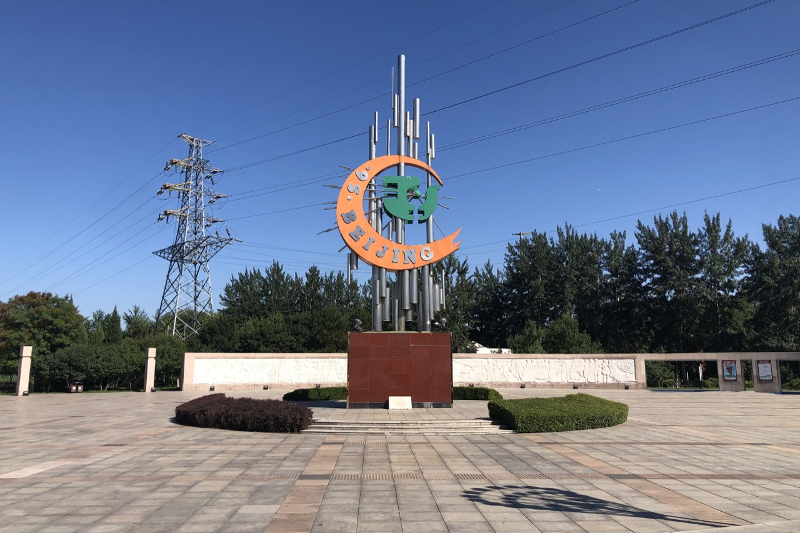
作品：Fourth World Conference on Women Commemorative Park (20200810153232).jpg
摄影：N509FZ
拍摄日期（来源声明）：2020-08-10
来源与完整原图 · CC BY-SA 4.0
2020年第四次世界妇女大会纪念公园历史影像，主体为纪念公园入口；不代表场所全貌、现行陈列、季节或开放状态。
由来源原图等比例缩小，并进行JPEG压缩（质量参数72）；未裁切、重绘、去人物或换背景。成品为1280×853。页面按容器缩放、裁显；完整原图见来源。
石景山区石刻博物馆
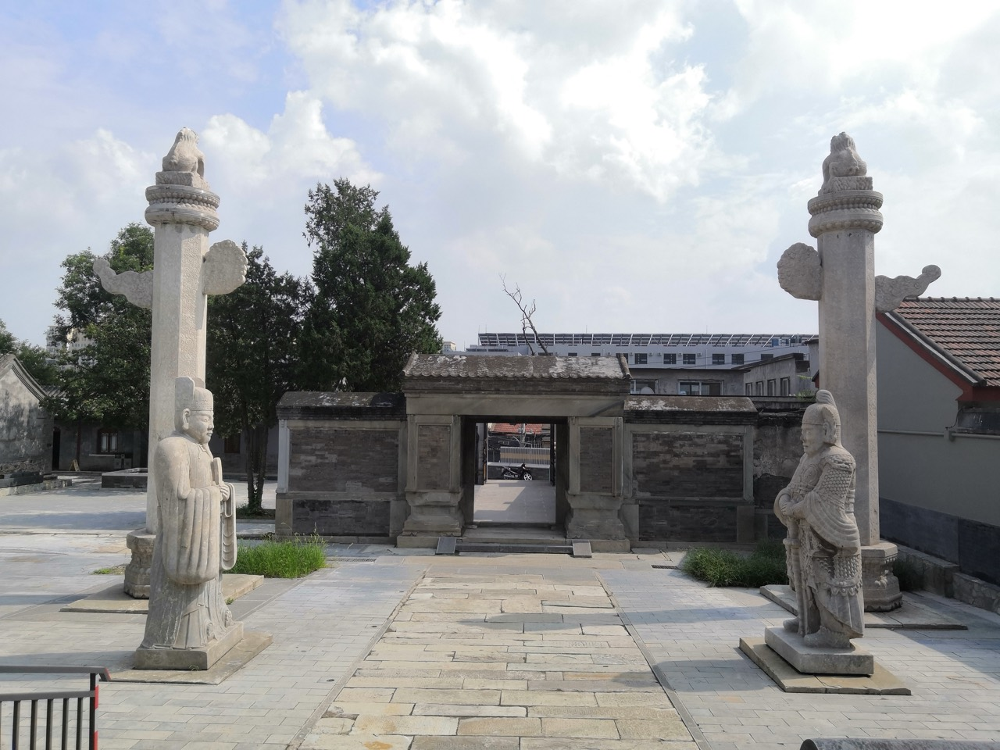
作品：Tomb of Tian Yi - gate and stone carvings.jpg
摄影：維基小霸王
拍摄日期（来源声明）：2019-08-02
来源与完整原图 · CC BY-SA 4.0
2019年石景山区石刻博物馆历史影像，主体为馆区田义墓的石门和石刻历史实景；不代表场所全貌、现行陈列、季节或开放状态。
由来源原图等比例缩小，并进行JPEG压缩（质量参数72）；未裁切、重绘、去人物或换背景。成品为1280×960。页面按容器缩放、裁显；完整原图见来源。
海淀区图书馆北馆
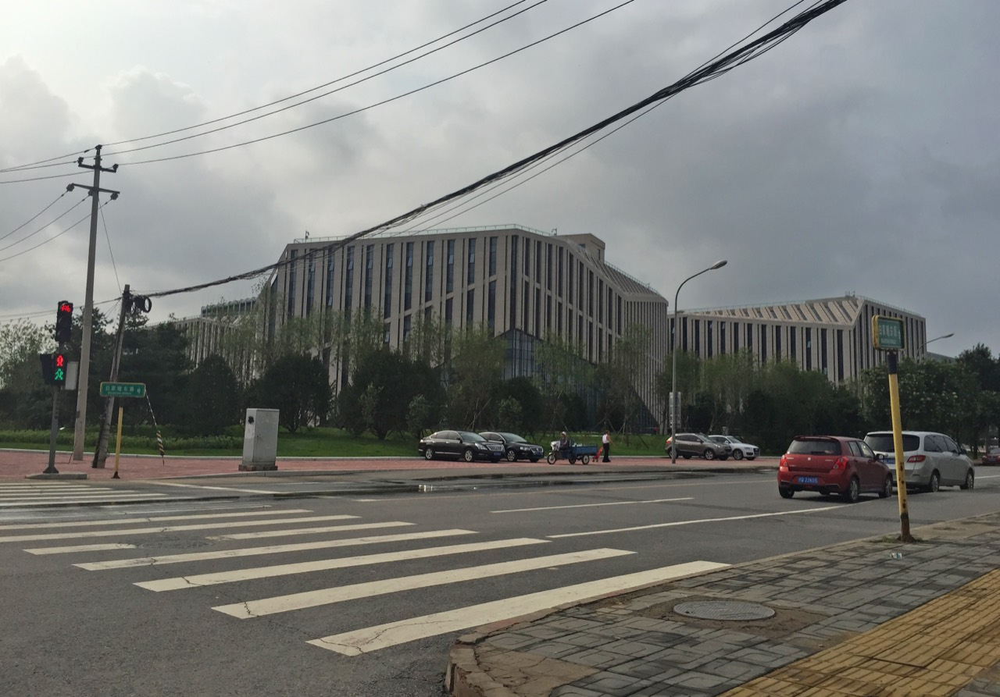
作品：Haidian Northern Culture Center (20160721163139).jpg
摄影：N509FZ
拍摄日期（来源声明）：2016-07-21
来源与完整原图 · CC BY-SA 4.0
2016年海淀区图书馆北馆历史影像，主体为图书馆所在海淀北部文化中心外观，非北馆室内；不代表场所全貌、现行陈列、季节或开放状态。
由来源原图等比例缩小，并进行JPEG压缩（质量参数72）；未裁切、重绘、去人物或换背景。成品为1280×893。页面按容器缩放、裁显；完整原图见来源。
北京大葆台遗址博物馆
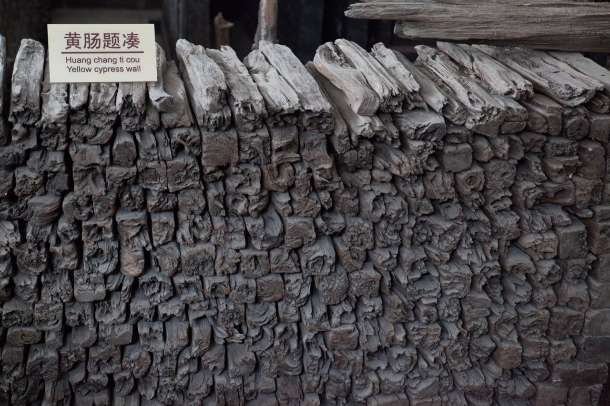
作品：Huangchangticou 黄肠题凑.jpg
摄影：Mlogic
拍摄日期（来源声明）：2011-03-19
来源与完整原图 · CC BY-SA 4.0
2011年北京大葆台遗址博物馆历史影像，主体为大葆台汉墓黄肠题凑历史实景，非重建后新馆全貌；不代表场所全貌、现行陈列、季节或开放状态。
由来源原图等比例缩小，并进行JPEG压缩（质量参数72）；未裁切、重绘、去人物或换背景。成品为1280×853。页面按容器缩放、裁显；完整原图见来源。
北滨河公园
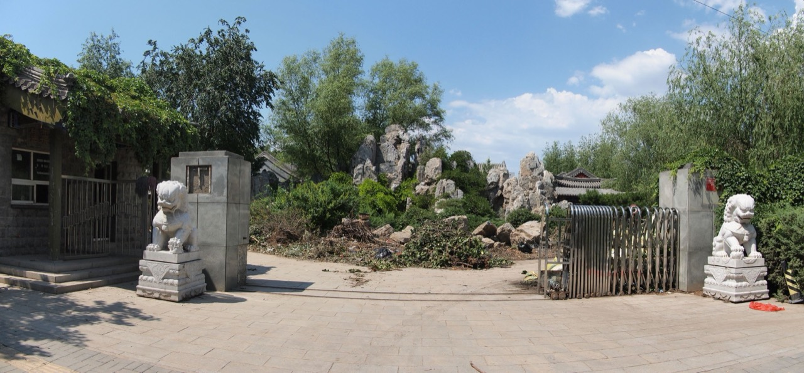
作品：北河滨公园 - Beihebin Park - 2011.06 - panoramio (2).jpg
摄影：rheins
拍摄日期（来源声明）：2011-06-08
来源与完整原图 · CC BY 3.0
2011年北滨河公园历史影像，主体为园内景观；不代表场所全貌、现行陈列、季节或开放状态。
由来源原图等比例缩小，并进行JPEG压缩（质量参数72）；未裁切、重绘、去人物或换背景。成品为1280×595。页面按容器缩放、裁显；完整原图见来源。
大望京公园
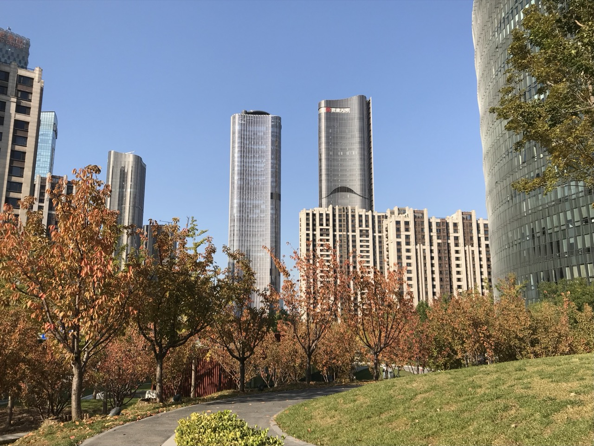
作品：Dawangjing Central Park in autumn.jpg
摄影：XiaYZ2023
拍摄日期（来源声明）：2020-10-18
来源与完整原图 · CC BY-SA 4.0
2020年大望京公园历史影像，主体为公园南部秋景；不代表场所全貌、现行陈列、季节或开放状态。
由来源原图等比例缩小，并进行JPEG压缩（质量参数72）；未裁切、重绘、去人物或换背景。成品为1280×960。页面按容器缩放、裁显；完整原图见来源。
夏都公园
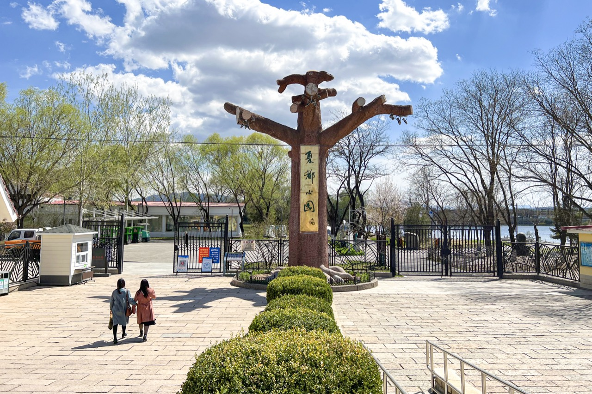
作品：North gate of Xiadu Park, Yanqing (20220414133235).jpg
摄影：N509FZ
拍摄日期（来源声明）：2022-04-14
来源与完整原图 · CC BY-SA 4.0
2022年夏都公园历史影像，主体为延庆夏都公园北门；不代表场所全貌、现行陈列、季节或开放状态。
由来源原图等比例缩小，并进行JPEG压缩（质量参数72）；未裁切、重绘、去人物或换背景。成品为1280×853。页面按容器缩放、裁显；完整原图见来源。
北京法海寺博物馆
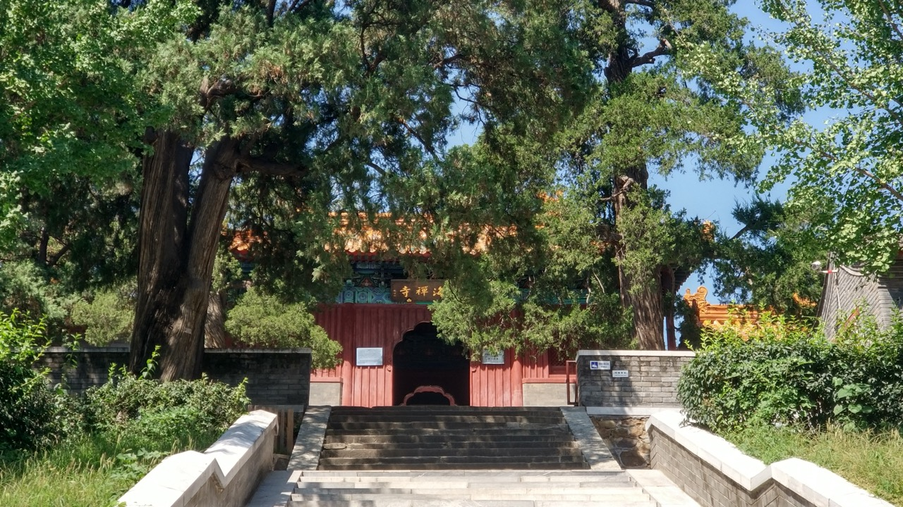
作品：法海寺正门.jpg
摄影：爱上甜食的猫
拍摄日期（来源声明）：2017-09-07
来源与完整原图 · CC BY-SA 4.0
2017年北京法海寺博物馆历史影像，主体为石景山法海寺正门；不代表场所全貌、现行陈列、季节或开放状态。
由来源原图等比例缩小，并进行JPEG压缩（质量参数72）；未裁切、重绘、去人物或换背景。成品为1280×720。页面按容器缩放、裁显；完整原图见来源。
西黄寺博物馆
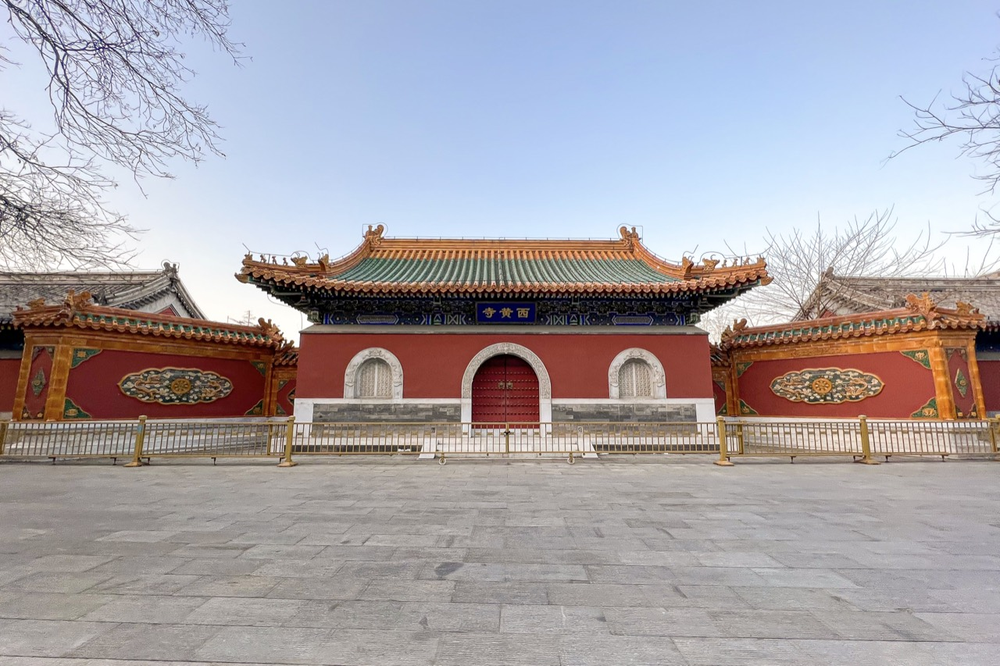
作品：West Yellow Temple (20211213161315).jpg
摄影：N509FZ
拍摄日期（来源声明）：2021-12-13
来源与完整原图 · CC BY-SA 4.0
2021年西黄寺博物馆历史影像，主体为西黄寺外观局部；不代表场所全貌、现行陈列、季节或开放状态。
由来源原图等比例缩小，并进行JPEG压缩（质量参数72）；未裁切、重绘、去人物或换背景。成品为1280×853。页面按容器缩放、裁显；完整原图见来源。
茅盾故居
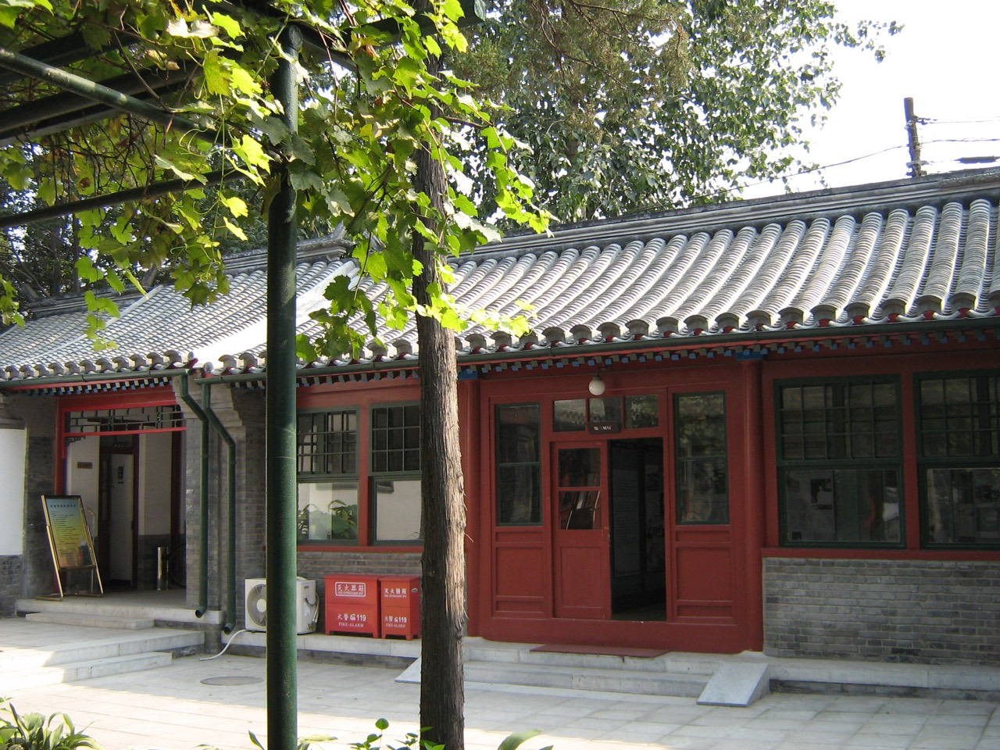
作品：Daozuofang in Mao Dun Guju, Beijing.jpg
摄影：Neo-Jay
拍摄日期（来源声明）：2007-09-07
来源与完整原图 · CC BY-SA 3.0
2007年茅盾故居历史影像，主体为北京故居倒座房院内一侧；不代表场所全貌、现行陈列、季节或开放状态。
由来源原图等比例缩小，并进行JPEG压缩（质量参数72）；未裁切、重绘、去人物或换背景。成品为1280×960。页面按容器缩放、裁显；完整原图见来源。
海棠郊野公园（朝阳）
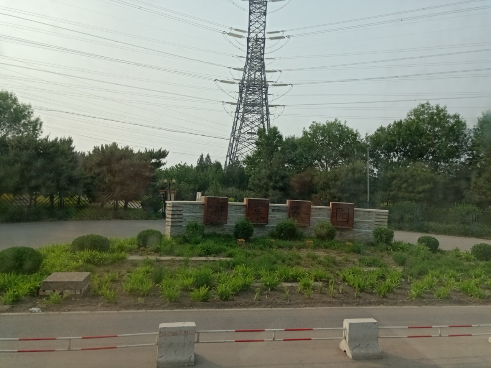
作品：Begonia Park, Beijing.jpg
摄影：PQ77wd
拍摄日期（来源声明）：2018-05-14
来源与完整原图 · CC BY-SA 4.0
2018年海棠郊野公园（朝阳）历史影像，主体为朝阳海棠郊野公园局部；不代表场所全貌、现行陈列、季节或开放状态。
由来源原图等比例缩小，并进行JPEG压缩（质量参数72）；未裁切、重绘、去人物或换背景。成品为1280×960。页面按容器缩放、裁显；完整原图见来源。
北京航空航天博物馆
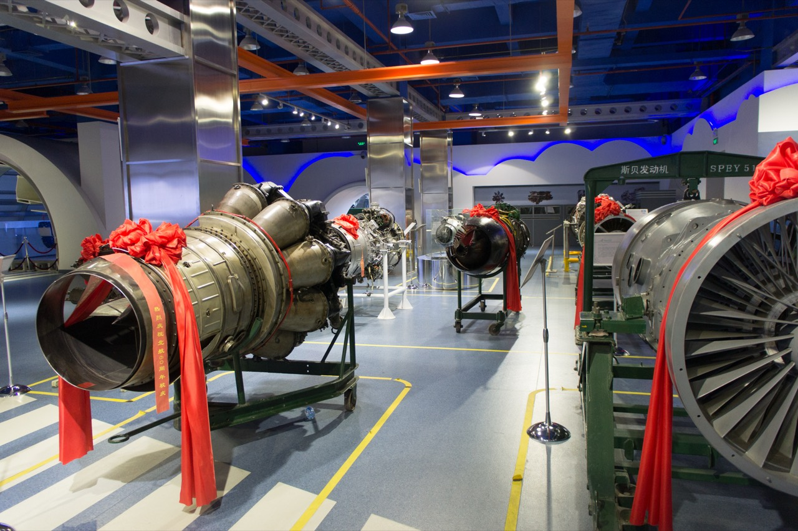
作品：Aircraft engines in Beijing Air and Space Museum.jpg
摄影：Shujianyang
拍摄日期（来源声明）：2016-03-25
来源与完整原图 · CC BY-SA 4.0
2016年北京航空航天博物馆历史影像，主体为馆内航空发动机历史展陈；不代表场所全貌、现行陈列、季节或开放状态。
由来源原图等比例缩小，并进行JPEG压缩（质量参数72）；未裁切、重绘、去人物或换背景。成品为1280×852。页面按容器缩放、裁显；完整原图见来源。
郭沫若纪念馆
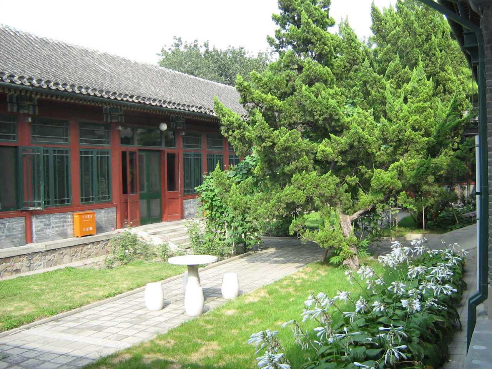
作品：Houzhaofang in Guo Moruo Memorial.jpg
摄影：Neo-Jay
拍摄日期（来源声明）：2007-08-30
来源与完整原图 · CC BY-SA 3.0
2007年郭沫若纪念馆历史影像，主体为北京郭沫若故居后罩房；不代表场所全貌、现行陈列、季节或开放状态。
由来源原图等比例缩小，并进行JPEG压缩（质量参数72）；未裁切、重绘、去人物或换背景。成品为1280×960。页面按容器缩放、裁显；完整原图见来源。
十三陵国家森林公园蟒山景区
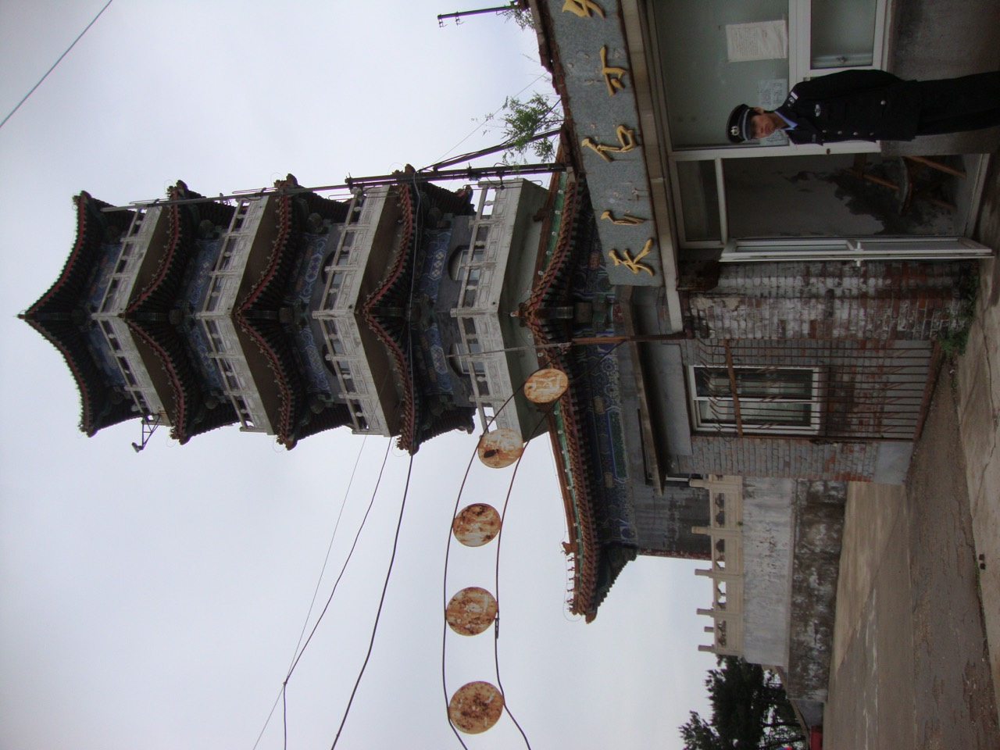
作品：蟒山瞭望塔 - Mangshan Mountain Observation Tower - 2012.05 - panoramio.jpg
摄影：rheins
拍摄日期（来源声明）：2012-05-12
来源与完整原图 · CC BY 3.0
2012年十三陵国家森林公园蟒山景区历史影像，主体为蟒山瞭望塔历史实景；不代表场所全貌、现行陈列、季节或开放状态。
由来源原图等比例缩小，并进行JPEG压缩（质量参数72）；未裁切、重绘、去人物或换背景。成品为960×1280。页面按容器缩放、裁显；完整原图见来源。
民族文化宫博物馆
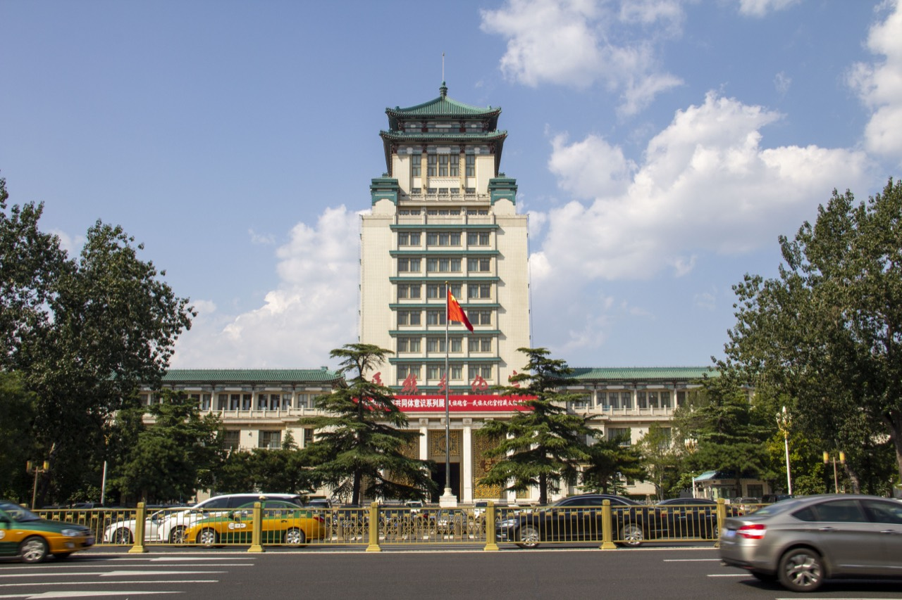
作品：The Cultural Palace of Nationalities.jpg
摄影：維基小霸王
拍摄日期（来源声明）：2020-09-02
来源与完整原图 · CC BY-SA 4.0
2020年民族文化宫博物馆历史影像，主体为民族文化宫建筑群外观，非单独的博物馆展厅；不代表场所全貌、现行陈列、季节或开放状态。
由来源原图等比例缩小，并进行JPEG压缩（质量参数72）；未裁切、重绘、去人物或换背景。成品为1280×853。页面按容器缩放、裁显；完整原图见来源。
.jpg){kind=link}

.jpg){kind=link}

.jpg){kind=link}

.jpg){kind=link}

.jpg){kind=link}